Je façonne des applications web robustes et des expériences fluides.
Étudiante en fin d'études de **BUT MMI (Parcours Développement Web et Dispositifs Interactifs)** à l'IUT de Troyes. J'allie l'ingénierie rigoureuse de l'architecture back-end à la finesse des détails front-end et de l'ergonomie.
Étudiante en BUT3 parcours développement web et dispositifs interactifs
BUT3 DWD — IUT Troyes
GitHub: @niniallx
PROFIL TECHNIQUE
L'ingénierie alliée à la sensibilité UX.
Actuellement en dernière année de **BUT Métiers du Multimédia et de l'Internet**, je me concentre sur la création d'architectures applicatives pérennes, de la conception à la mise en ligne.
Ma double expertise me permet d'intervenir à la fois sur l'architecture de bases de données et la logique serveur (Symfony 7, Node.js, PostgreSQL) et sur le développement d'interfaces fluides et ergonomiques en s'appuyant sur des composants modernes (Vue.js 3, React, Tailwind CSS).
Symfony 7Vue.js 3Node.jsReactAPI REST & JWTDocker
RÉALISATIONS PROFESSIONNELLES & ACADÉMIQUES
Mes Projets
Consulter l'étude de cas
SYS. Rappel
Stage BUT3 · Terminé
Plateforme de relance et suivi
RJ10 Rappel
Application de rappel automatique pour le renouvellement des certifications professionnelles.
Application de suivi d'échéances et de notifications automatisées de renouvellement développée chez RJ10 Formation.
DévelopperConcevoirEntreprendreComprendre
01
Introduction et contexte
Dans le cadre de ma troisième année de BUT Métiers du Multimédia et de l'Internet (MMI) à l'IUT de Troyes, j'ai effectué un stage de neuf semaines, du 23 mars au 22 mai 2026, au sein de RJ10 Formation, un centre de formation aux métiers de la sécurité situé à La Chapelle-Saint-Luc, dans l'Aube. Ce centre propose des formations professionnelles telles que l'APS (Agent de Prévention et Sécurité), le SSIAP (Sécurité Incendie) et le SST (Sauveteur Secouriste du Travail). J'ai travaillé en totale autonomie sur ce projet, sans équipe technique autour de moi, ce qui m'a demandé une organisation rigoureuse et une grande capacité à prendre des décisions seule.
02
La mission
Mon superviseur, José Pereira, m'a fait part d'un besoin précis dès le début du stage. Le centre utilisait déjà Digiforma, un logiciel professionnel complet qui permet aux organismes de formation de gérer leurs documents administratifs, leur relation client, leurs sessions de formation et leur suivi qualité. Malgré sa richesse, cet outil présentait un angle mort : il ne permettait pas de relancer automatiquement les anciens stagiaires lorsque leur titre professionnel approchait de sa date d'expiration.
C'est ce manque précis qui est à l'origine du projet. Concrètement, lorsqu'un stagiaire obtient son titre professionnel, celui-ci a une durée de validité limitée : cinq ans pour une carte professionnelle APS, trois ans pour un SSIAP, deux ans pour un SST. Sans système de suivi, le centre perdait le contact avec ses anciens stagiaires qui, faute de rappel, oubliaient de renouveler leur titre ou allaient se former ailleurs.
Motivée par l'envie de répondre concrètement à ce besoin, j'ai analysé les limites de l'outil existant et proposé une solution complémentaire adaptée : une application web de gestion de rappels automatiques, pensée spécifiquement pour ce centre. Ma mission était donc de concevoir et développer cet outil de A à Z, permettant de gérer les stagiaires, de suivre leurs formations et d'envoyer automatiquement des emails de rappel avant l'expiration de leur titre. L'objectif était simple : fidéliser les anciens stagiaires et les inciter à renouveler leur certification au sein du même centre plutôt qu'ailleurs.
Traces de développement (Cliquer pour zoomer)
Agrandir
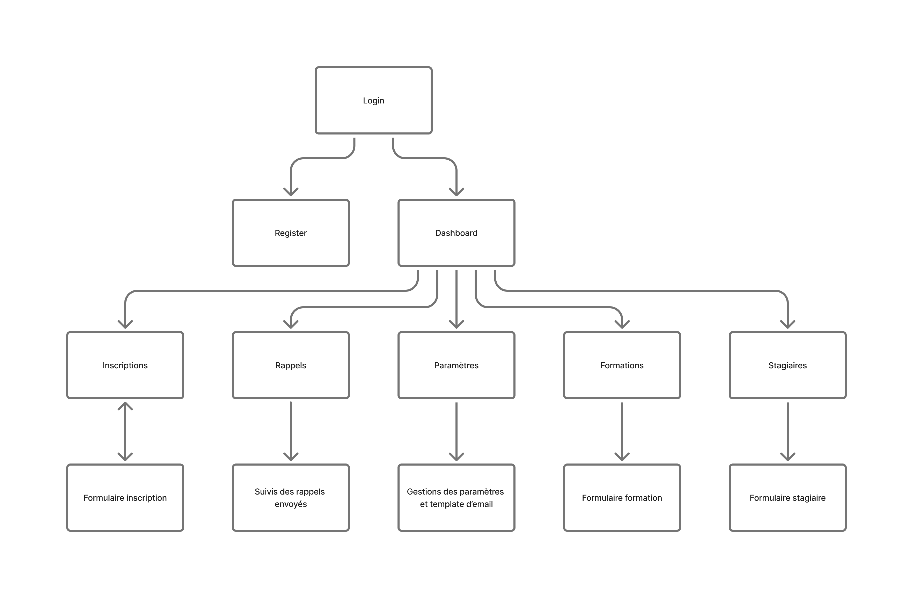
Agrandir
Agrandir
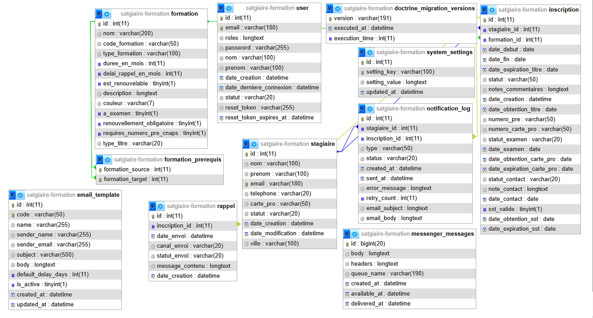
Agrandir
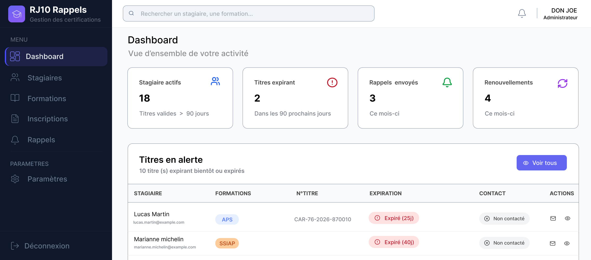
Agrandir
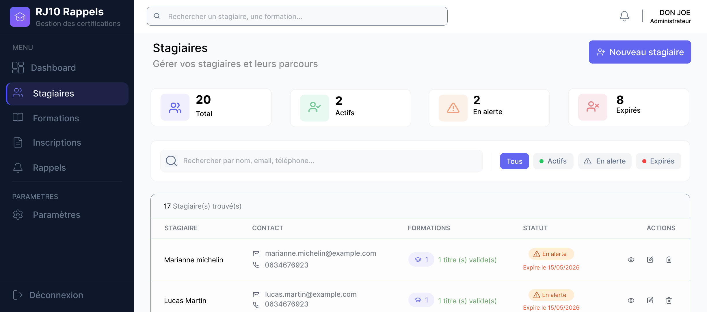
Agrandir
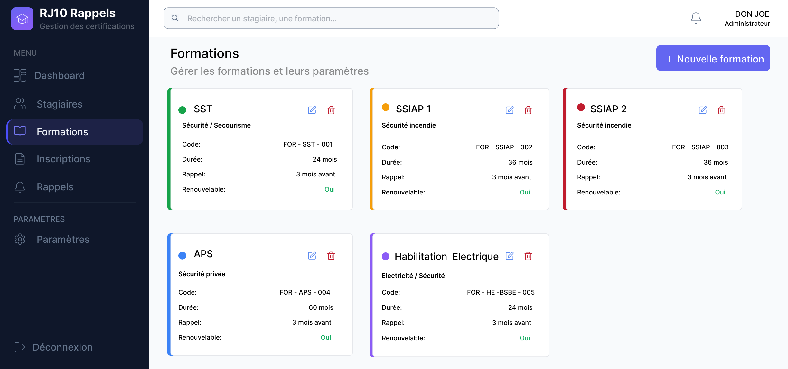
Agrandir
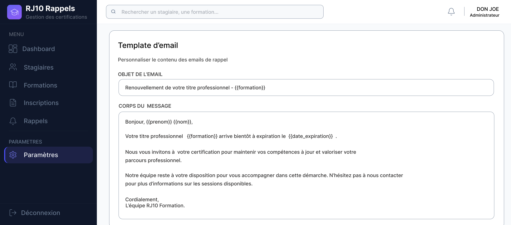
Agrandir
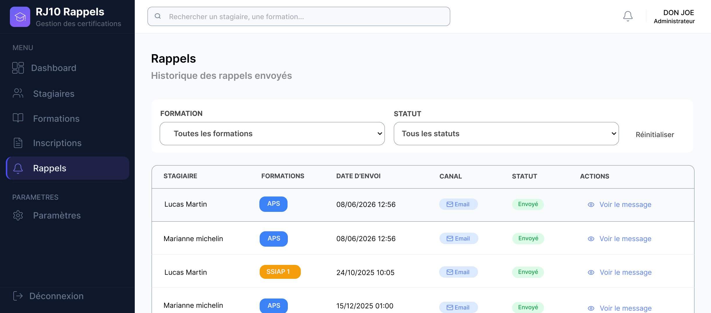
03
Étapes du processus de création
1. Analyse des besoins et compréhension du métier
Avant de commencer à construire quoi que ce soit, j'ai pris le temps de comprendre le fonctionnement réel du centre et de ses formations. J'ai découvert que chaque type de formation obéit à des règles très différentes. Par exemple, seul l'APS nécessite une autorisation préalable délivrée par le CNAPS, l'organisme national qui régule les métiers de la sécurité privée. Le SSIAP délivre une simple attestation et non une carte professionnelle. Et certaines formations, comme le SST, sont obligatoires pour pouvoir s'inscrire à d'autres formations comme l'APS ou le SSIAP. Comprendre ces règles métier avant de concevoir l'outil était indispensable pour ne pas construire quelque chose qui ne corresponde pas à la réalité du terrain.
2. Organisation et architecture de l'application
Avant de commencer à construire l'application, j'ai réfléchi à son organisation générale, un peu comme on dessine le plan d'une maison avant de la construire. J'ai défini que l'accès se ferait via une page de connexion sécurisée, puis que l'administrateur arriverait sur un tableau de bord central depuis lequel il pourrait accéder à d'autres espaces : la gestion des stagiaires, le catalogue des formations, les inscriptions, l'historique des rappels et les paramètres d'envoi.
3. Construction de la partie invisible de l'application
J'ai ensuite construit la partie de l'application que l'utilisateur ne voit pas mais qui fait tout fonctionner en arrière-plan : la gestion des données, les calculs automatiques et l'envoi des emails. Pour cela j'ai utilisé Symfony 7, un outil professionnel reconnu dans le milieu du développement web. Concrètement, j'ai mis en place un système de connexion sécurisé, une base de données pour store toutes les informations, ainsi qu'un programme automatique (Cron) qui se déclenche pour détecter les titres expirants.
4. Construction de l'interface visuelle
J'ai ensuite créé la partie visible de l'application avec Vue.js 3, un outil qui permet de créer des pages réactives et agréables à utiliser. L'interface comprend un tableau de bord global, un espace de gestion des profils des stagiaires, l'historique complet des sessions, etc. L'administrateur peut également forcer un rappel d'email manuellement en un clic.
5. Gestion des situations complexes
Au fil du développement, j'ai rencontré des situations que je n'avais pas anticipées. Par exemple, un même stagiaire peut avoir suivi plusieurs formations différentes à des périodes distinctes, chacune avec sa propre validité. J'ai également dû intégrer la notion de prérequis entre formations (SST valide obligatoire pour SSIAP). Ces défis m'ont obligée à réajuster la modélisation à plusieurs reprises.
Comment ça fonctionne ? (Logique Technique)
Étape 1 : Le serveur lance une tâche planifiée automatique quotidiennement.
➔
Étape 2 : Le programme recherche en base de données les stagiaires dont la certification expire dans exactement 3 mois.
➔
Étape 3 : Le système génère un email personnalisé via Symfony Mailer et l'envoie de manière asynchrone.
// Command/Scheduler task for daily checks inside Symfony Command
public function execute(InputInterface $input, OutputInterface $output): int {
// Querying database via repository pattern
$stagiaires = $this->stagiaireRepository->findExpiringInMonths(3);
foreach ($stagiaires as $stagiaire) {
// Dispatching asynchronous email messages
$this->mailer->sendRappel($stagiaire);
$this->logRappel($stagiaire);
}
return Command::SUCCESS;
}
04
Difficultés rencontrées
La principale difficulté a été de travailler seule sans interlocuteur technique. Lorsque je bloquais sur un problème de logique ou de fonctionnement, je m'appuyais sur deux ressources principales : mes propres recherches et l'intelligence artificielle comme assistant de travail. Concrètement, quand je n'arrivais pas à identifier la source d'un problème, je formulais ma question précisément à l'IA pour explorer des pistes de solution, que j'analysais et adaptais ensuite par moi-même avant de les appliquer. Cette façon de travailler m'a appris à poser des questions techniques claires et structurées, une compétence essentielle dans le monde du développement.
J'ai également eu du mal à clarifier certaines règles métier au départ, notamment la distinction entre la période pendant laquelle un stagiaire suit sa formation et la durée de validité du titre qu'il obtient à l'issue de celle-ci. Ces deux notions, que j'avais d'abord confondues, m'ont obligée à revoir une partie de mon travail en cours de route. C'est en échangeant à la fois avec mon superviseur pour comprendre le métier, et avec l'IA pour clarifier la logique technique, que j'ai pu trouver la bonne organisation.
05
Bilan personnel
1. Ce que ce projet m'a apporté
Ce stage m'a appris que construire une application ne se résume pas à des compétences techniques. Comprendre le métier du client, bien réfléchir à l'organisation des données avant de commencer et anticiper les situations particulières sont des étapes tout aussi importantes que le développement lui-même. C'est cette vision globale du projet que je retiens avant tout.
2. Les compétences développées
Ce projet m'a confrontée à une dimension que je n'avais pas encore vraiment expérimentée : gérer un projet numérique de A à Z en totale autonomie, dans un contexte professionnel réel. J'ai dû comprendre un besoin métier, analyser les limites d'un outil existant, proposer une solution adaptée, prendre toutes les décisions techniques seule et m'organiser sur neuf semaines sans encadrement. Cette expérience m'a donné une vision concrète et réaliste de ce que signifie mener un projet numérique en situation professionnelle.
3. Ce que je ferais différemment
Si je devais recommencer, j'accorderais encore plus de temps à la phase d'analyse au départ, en posant toutes les questions nécessaires sur le fonctionnement du métier avant d'écrire la moindre ligne de code. Cela m'aurait évité plusieurs allers-retours en cours de développement et m'aurait permis d'avancer de façon plus linéaire et plus sereine.
Projet Personnel Inédit · En ligne
Noor — Application de bien-être féminin & santé
Application web progressive (PWA) croisant suivi biologique et pratique cultuelle personnalisée.
DévelopperConcevoirEntreprendreComprendreExprimer
01
Introduction et contexte
Dans le cadre du module PTUT de ma troisième année de BUT Métiers du Multimédia et de l'Internet (MMI) à l'IUT de Troyes, j'ai conçu et développé en totale autonomie un projet personnel inédit appelé Noor, mot arabe signifiant « lumière ». Ce projet répond à une obligation académique : réaliser une application complète et complexe démontrant ma capacité à entreprendre et mener un projet de bout en bout, sans encadrement pédagogique direct.
Noor est une application web destinée aux femmes souhaitant concilier suivi de leur santé féminine et pratique spirituelle et culturelle au quotidien. L'idée est née d'un constat personnel : les applications existantes de suivi du cycle menstruel ignorent totalement la dimension culturelle et spirituelle, tandis que les applications de pratique religieuse ne tiennent aucun compte de la réalité physiologique féminine. En tant que femme concernée par ce besoin, j'ai choisi de concevoir moi-même l'outil qui manquait.
Le projet est accessible sur Noor App.
02
La problématique
Comment concevoir une application de santé féminine qui prend en compte non seulement les données physiologiques, mais aussi les pratiques culturelles et spirituelles des utilisatrices, en proposant un accompagnement personnalisé et automatiquement adapté selon leur situation du moment ?
03
Comment fonctionne Noor
Noor est construite en deux parties distinctes qui communiquent entre elles.
La première partie est le serveur (la partie invisible de l'application) : il gère toutes les données des utilisatrices, vérifie leur identité à la connexion grâce à un système de jetons numériques sécurisés, et contient toute la logique de l'application. Par exemple, il calcule automatiquement la phase du cycle de chaque utilisatrice et détermine si ses pratiques spirituelles doivent être adaptées selon sa situation du jour.
La deuxième partie est l'interface visuelle (ce que voit l'utilisatrice) : elle affiche les informations de manière claire et personnalisée, et se met à jour en temps réel sans avoir besoin de recharger la page. Par exemple, cocher une prière dans la page Spiritualité met instantanément à jour le compteur affiché dans la barre de navigation.
Noor récupère également des informations depuis deux services externes gratuits : les horaires de prières sont calculés automatiquement selon la ville de l'utilisatrice, et des versets inspirants en arabe avec leur traduction française sont affichés et renouvelés dynamiquement.
Interface de l'application Noor (Cliquer pour zoomer)
Agrandir

Agrandir
Agrandir
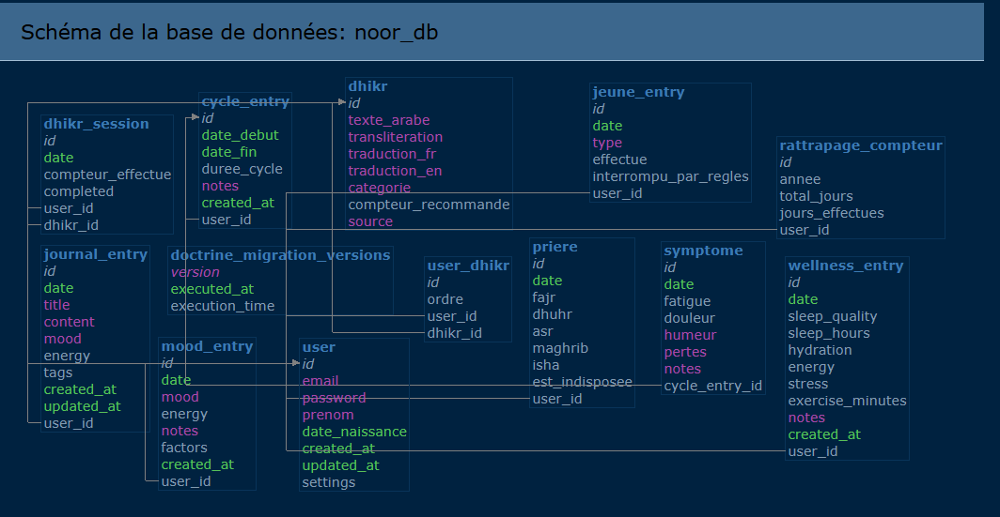
Agrandir
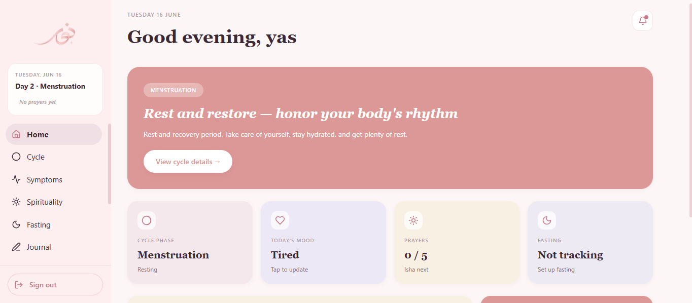
Agrandir
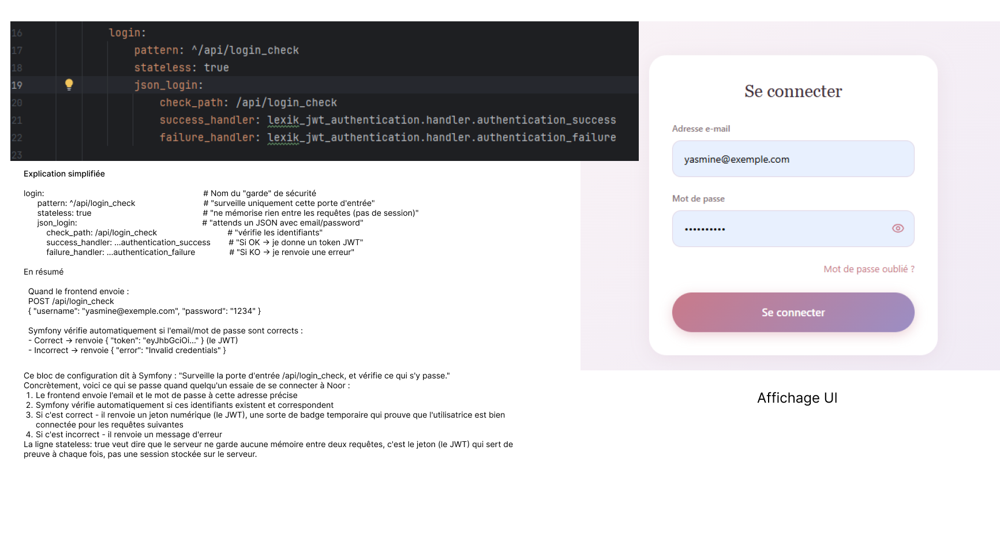
Agrandir
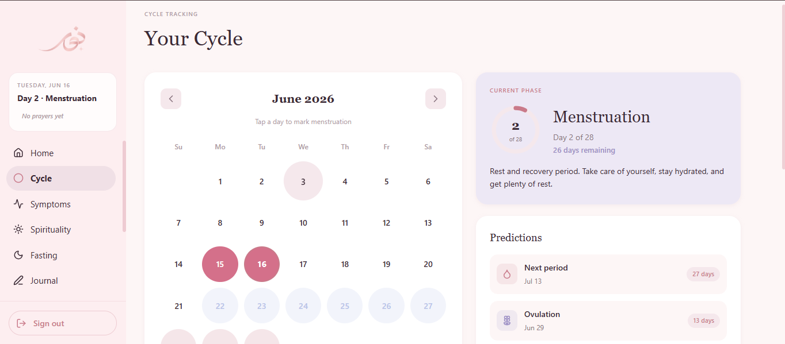
Agrandir
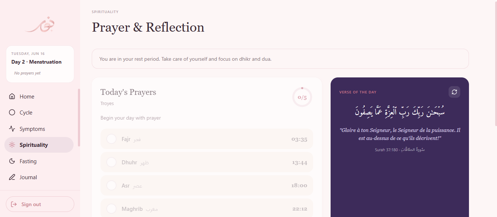
Agrandir
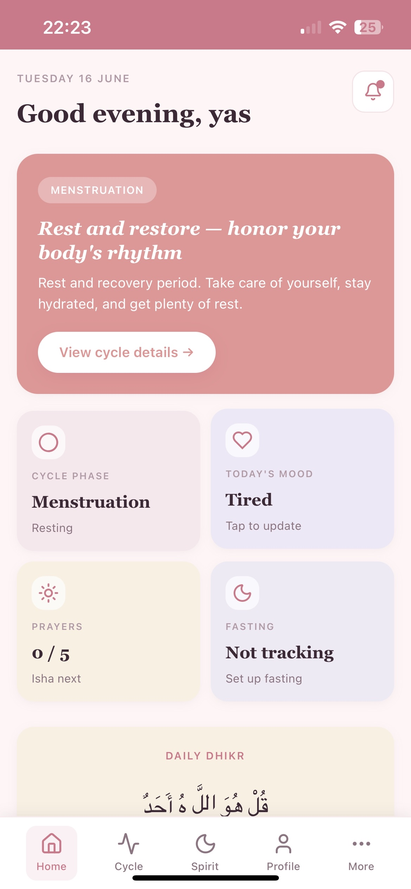
Agrandir
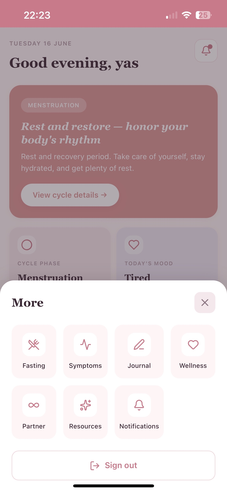
04
Étapes de conception & réalisation
1. Recherche et analyse des besoins
Avant d'écrire la moindre ligne de code, j'ai analysé les applications existantes : Flo et Clue pour le suivi du cycle menstruel, Taahirah pour l'accompagnement spirituel féminin. J'ai identifié ce qui manquait dans chacune et défini les fonctionnalités qui rendraient Noor réellement utile. Ce projet est borné d'un besoin réel que j'ai observé au sein de ma communauté : les femmes manquent souvent d'informations claires et accessibles sur la façon dont leur cycle menstruel interagit avec leurs pratiques spirituelles et culturelles. Ces sujets sont rarement abordés ouvertement, ce qui crée un vide que le numérique peut contribuer à combler de manière bienveillante et discrète.
2. Conception de la structure de données
Avant de développer, j'ai modélisé comment les informations allaient être organisées et stockées. Noor gère six types de données interconnectées : les utilisatrices, leurs entrées de cycle menstruel, leurs symptômes quotidiens, leurs prières, leurs entrées de jeûne et leur compteur de jours à rattraper. La relation la plus complexe est celle entre le cycle et le jeûne : lorsqu'une utilisatrice renseigne des jours de menstruations pendant une période de jeûne, l'application recalcule automatiquement le nombre de jours à rattraper sans aucune intervention manuelle.
3. Développement de la partie serveur
J'ai développé la partie invisible de l'application avec Symfony 7, un outil professionnel largement utilisé en entreprise pour créer des applications web fiables et sécurisées. J'ai créé trois modules logiques principaux : le premier calcule automatiquement la phase du cycle de l'utilisatrice (règles, post-règles, ovulation, pré-règles) selon ses données ; le deuxième détermine en temps réel si les pratiques spirituelles doivent être affichées comme actives ou adaptées ; le troisième synchronise automatiquement le compteur de jours à rattraper à chaque modification des données de cycle.
4. Développement de l'interface visuelle
J'ai développé l'interface avec Vue.js 3, un outil qui permet de créer des pages web interactives et fluides. J'ai défini une charte graphique complète : palette de couleurs douces (rose poudré, lavande, crème), typographies élégantes (Playfair Display pour les titres, DM Sans pour le corps de texte), composants visuels réutilisables. L'application s'adapte automatiquement à la langue choisie par l'utilisatrice (français ou anglais), avec sauvegarde de la préférence dans son profil.
Comment ça fonctionne ? (Logique Technique)
Étape 1 : L'utilisatrice saisit une nouvelle entrée de menstruation.
➔
Étape 2 : Le système met à jour dynamiquement l'état réactif global avec Pinia.
➔
Étape 3 : Les compteurs de prière et de jours de jeûne à rattraper se recalcule instantanément de manière transparente.
// Pinia Store handling reactive global state across pages in Noor App
export const useNoorStore = defineStore('noor', {
state: () => ({ activeCyclePhase: 'folliculaire', fastingDaysToRepay: 0 }),
actions: {
updateCycle(newPhase: string, menstruationActive: boolean) {
this.activeCyclePhase = newPhase;
if (menstruationActive) {
this.fastingDaysToRepay++; // Auto-increment repayment counts
}
}
}
});
05
Difficultés rencontrées — Noor
La synchronisation entre les différents modules
La principale difficulté a été de faire communiquer les différentes parties de l'application entre elles de manière fluide. Concrètement, une modification du cycle menstruel doit immédiatement se répercuter sur l'affichage des pratiques spirituelles, le calcul des jours de jeûne à rattraper et les messages personnalisés du tableau de bord. Pour résoudre ce problème, j'ai centralisé toutes les données dans un espace de gestion partagé, accessible simultanément par toutes les pages de l'application, un peu comme un tableau d'affichage central que toutes les pièces d'une maison peuvent consulter en temps réel.
Le calcul du cycle et du rattrapage de jeûne
La logique de calcul du cycle et des jours de jeûne à rattraper a été la partie la plus complexe du projet. Ces calculs impliquent des règles précises qui varient selon chaque utilisatrice. J'ai eu recours à l'intelligence artificielle pour m'aider à structurer cette logique mathématique, tester différents cas de figure et m'assurer que les résultats restaient cohérents dans toutes les situations. L'IA m'a permis d'explorer rapidement plusieurs approches avant de choisir celle qui correspondait le mieux aux besoins réels des utilisatrices.
L'installation sur l'écran d'accueil du téléphone
J'ai souhaité que Noor puisse s'installer directement sur l'écran d'accueil d'un téléphone, comme une vraie application, sans passer par l'App Store ou le Google Play Store. Cette technologie, appelée PWA (application web progressive), permet à un site web de se comporter comme une application mobile native. Sa mise en place a nécessité une configuration technique spécifique que je ne maîtrisais pas au départ. J'ai utilisé l'IA pour comprendre les étapes à suivre et identifier les fichiers de configuration nécessaires, avant de les adapter au contexte de mon projet.
La gestion du texte arabe
L'arabe s'écrit de droite à gauche, ce qui est à l'opposé du français et de l'anglais. Intégrer cette langue dans l'application sans que la mise en page se retrouve désorganisée a demandé des ajustements spécifiques sur certaines parties de l'interface. J'ai dû apprendre à gérer cette particularité technique pour que les deux sens de lecture coexistent harmonieusement dans la même application.
La mise en ligne de l'application
Mettre l'application en ligne a représenté un apprentissage important. Le serveur qui gère les données et l'interface visuelle que l'utilisatrice voit sur son écran étaient hébergés sur deux plateformes différentes. Les faire communiquer de façon sécurisée a nécessité une configuration que je ne connaissais pas encore, et que j'ai apprise en combinant mes recherches personnelles et l'aide de l'IA pour comprendre les paramètres techniques à mettre en place.
06
Bilan personnel
1. Quels bénéfices pour la suite ?
Noor est le projet qui m'a le plus appris sur ma capacité à concevoir et mener un projet complet de manière autonome. Partir d'un besoin réel identifié dans ma propre expérience et au sein de ma communauté, le transformer en fonctionnalités concrètes, développer les deux parties de l'application, connecter des services externes, soigner l'interface et mettre en ligne une application accessible à toutes : chaque étape a mobilisé des compétences différentes et complémentaires. Ce projet démontre directement ma capacité à être autonome sur un poste de développeur web junior dès la sortie du BUT.
2. Valorisation des compétences
Les compétences démontrées dans Noor correspondent exactement aux attentes des entreprises : développement web complet côté serveur et côté interface, sécurisation des accès utilisateurs, environnement de développement reproductible, intégration de services externes, conception d'interface soignée et mise en production d'une application accessible au public. Ces compétences apparaissent dans la quasi-totalité des offres d'emploi junior que j'ai consultées lors de ma recherche d'emploi.
3. Prise de recul et amélioration
Si je devais recommencer, j'aurais défini un périmètre plus restreint dès le départ pour éviter de disperser mon énergie sur trop de fonctionnalités simultanément. J'aurais également anticipé les contraintes de mise en ligne dès la phase de conception, car plusieurs problèmes rencontrés lors du déploiement auraient pu être évités avec une meilleure organisation initiale. Enfin, j'aurais intégré des vérifications automatiques du code dès le début du développement plutôt qu'en fin de projet.
Conception UX/UI · Stage BUT2
Arborescence, wireframe et maquette — Plan Poitrines
Conception UX/UI complète de l'architecture d'information sur Figma.
ComprendreEntreprendreConcevoirExprimer
01
Introduction et contexte
Avant de me lancer dans le développement du site vitrine de Plan Poitrines, j'ai consacré une phase entière à la conception. Cette étape, souvent invisible dans le résultat final, est pourtant celle qui conditionne la qualité de tout ce qui suit. Dans un contexte associatif où l'identité visuelle était encore en construction et où les décisions se prenaient collectivement entre les deux co-présidentes et moi, il était d'autant plus important de poser des bases claires et validées avant d'écrire la moindre ligne de code.
02
La mission
Ma mission était de concevoir l'organisation et le design du site vitrine avant son développement, en passant par trois étapes successives : l'arborescence, le wireframe, puis la maquette. Chacune de ces étapes avait un objectif précis : structurer le contenu, anticiper le parcours de l'utilisateur, et permettre à l'équipe de visualiser le futur site avant sa réalisation technique. L'enjeu était aussi de créer un outil de communication commun avec les co-présidentes, pour valider les choix ensemble et éviter des allers-retours coûteux en temps une fois le développement lancé.
Traces du processus de maquettage (Cliquer pour zoomer)
Agrandir
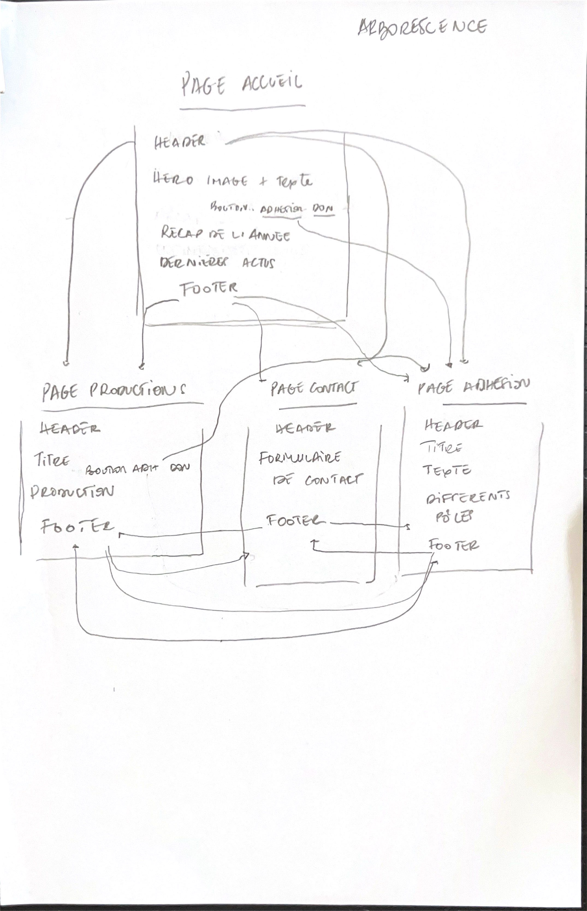
Agrandir
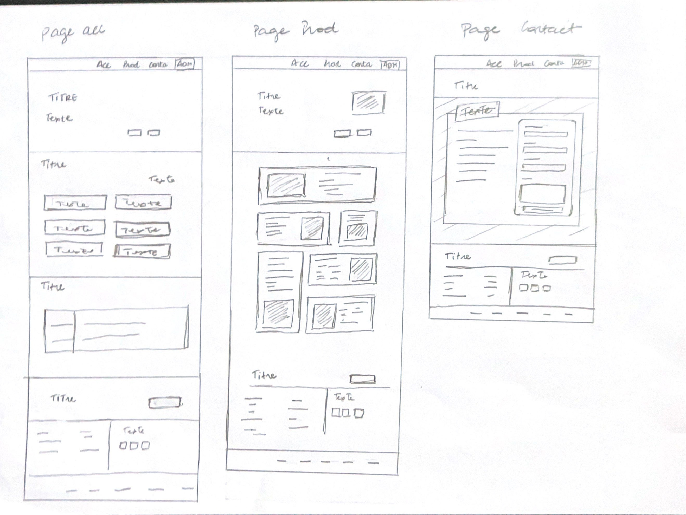
Agrandir
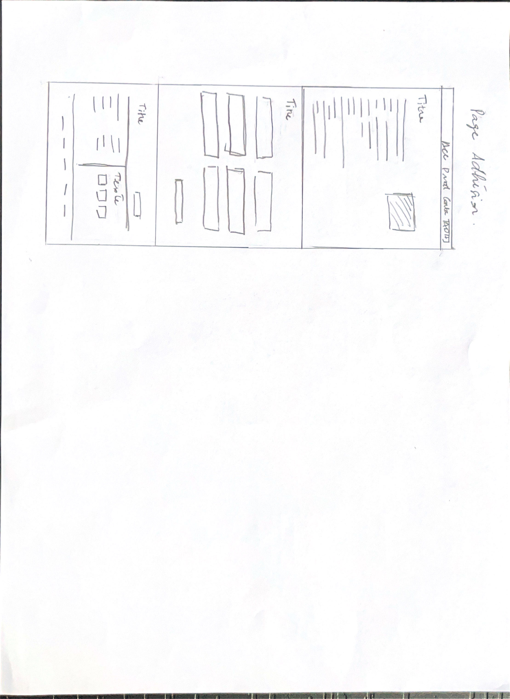
Agrandir
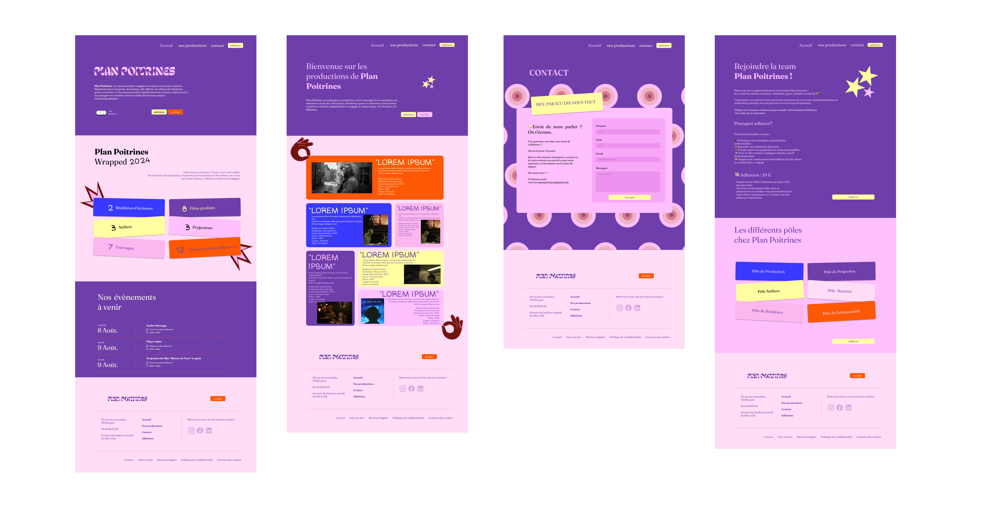
03
Étapes du processus de création
L'arborescence : organiser les pages du site
J'ai commencé par construire l'arborescence du site, c'est-à-dire le plan général qui liste toutes les pages et montre comment elles sont reliées entre elles. J'ai défini quatre pages principales — Accueil, Productions, Contact et Adhésion — en réfléchissant à la logique de navigation : comment un visiteur arrive sur le site, où il va ensuite, et comment il trouve rapidement ce qu'il cherche. Ce travail m'a obligée à me mettre à la place de différents types d'utilisateurs : un membre existant, un partenaire potentiel, ou quelqu'un qui découvre l'association pour la première fois.
Le wireframe : dessiner la structure avant le design
Une fois l'arborescence validée, j'ai réalisé des wireframes — des maquettes simplifiées en noir et blanc, sans couleurs ni images, qui montrent uniquement où se trouvent les éléments sur chaque page : le menu, les zones de texte, les boutons, les images. L'objectif n'était pas de rendre quelque chose de beau, mais de réfléchir à la hiérarchie de l'information et à l'accessibilité : qu'est-ce qui doit être visible en premier ? Où l'utilisateur s'attend-il à trouver le bouton de contact ? Cette étape m'a permis d'anticiper des problèmes de lisibilité avant même de commencer le design.
La maquette : donner vie au projet sur Figma
J'ai ensuite conçu la maquette complète sur Figma, un outil de design collaboratif en ligne qui permet à plusieurs personnes de voir et de commenter un fichier en temps réel. La maquette reprend la structure définie dans le wireframe, mais avec les vraies couleurs, la vraie typographie et les vrais contenus. J'ai traduit l'univers de Plan Poitrines en choix graphiques concrets : une palette vive de violet, rose, orange et jaune, une typographie moderne, et une mise en page qui laisse respirer le contenu sans le noyer sous les visuels. Figma a été un vrai atout pour les échanges avec les co-présidentes : elles pouvaient voir directement à quoi ressemblerait leur site et laisser des commentaires, ce qui a rendu les retours beaucoup plus concrets et rapides que de longues explications par messages.
04
Difficultés rencontrées
La principale difficulté a été de travailler sur l'identité visuelle alors que la charte graphique de l'association n'était pas encore finalisée. J'ai dû faire des choix provisoires, en m'appuyant sur les éléments existants et les orientations données par les co-présidentes, tout en sachant que certains ajustements seraient nécessaires plus tard. Cela demande une certaine flexibilité dans la façon de construire le design : ne pas tout figer, prévoir des marges d'adaptation. Par ailleurs, obtenir des retours précis de l'équipe à distance n'était pas toujours simple — les co-présidentes validaient dans les grandes lignes, mais les détails graphiques nécessitaient parfois plusieurs échanges avant d'aboutir à une décision.
05
Synthèse et réflexion
Cette phase de conception m'a appris que bien préparer un projet numérique, c'est avant tout bien le penser avant de le réaliser. L'arborescence, le wireframe et la maquette ne sont pas des étapes facultatives : ce sont des outils qui permettent d'aligner tout le monde sur une vision commune et d'éviter des erreurs coûteuses à corriger tard dans le projet. J'ai aussi compris la valeur d'un outil collaboratif comme Figma dans un contexte de télétravail : il remplace avantageusement de longues descriptions verbales et rend les échanges bien plus efficaces. Sur le plan personnel, cette expérience m'a appris à être patiente face aux décisions collectives et à travailler avec l'incertitude — quand tout n'est pas fixé d'avance, il faut savoir avancer avec ce qu'on a, tout en gardant la capacité d'ajuster.
Intégration Web · Stage BUT2
Création du site vitrine — Plan Poitrines
Développement web natif sans CMS d'un site vitrine léger, fluide et documenté.
DévelopperEntreprendreComprendreExprimer
01
Introduction et contexte
Dans le cadre de ma deuxième année de BUT Métiers du Multimédia et de l'Internet (MMI) à l'IUT de Troyes, j'ai effectué un stage de huit semaines, du 1er avril au 1er juin 2025, au sein de l'association Plan Poitrines, anciennement Black Sheep. Ce collectif soutient de jeunes cinéastes, majoritairement des femmes, en promouvant des valeurs féministes, queer et inclusives à travers des projets audiovisuels. Mon stage s'est déroulé à un moment charnière pour l'association : elle traversait un changement de nom et une refonte complète de son identité visuelle. C'est dans ce contexte de transition que les deux co-présidentes m'ont confié, parmi d'autres missions, la conception et le développement d'un site vitrine. Je travaillais principalement en télétravail trois jours par semaine, ce qui m'a imposé d'emblée une forte autonomie et une communication régulière avec l'équipe à distance.
02
La mission
L'objectif était de créer un site vitrine fonctionnel pour améliorer la visibilité de l'association et structurer sa communication en ligne. Le site devait refléter la nouvelle identité de Plan Poitrines — engagée, créative et inclusive — tout en étant accessible et lisible pour des publics variés : membres, partenaires, et personnes découvrant l'association. Les co-présidentes souhaitaient un outil simple à prendre en main par l'équipe après mon départ, sans dépendance à des technologies complexes.
Aperçus du site (Cliquer pour zoomer)
Agrandir
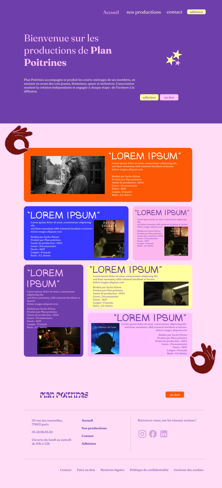
Agrandir
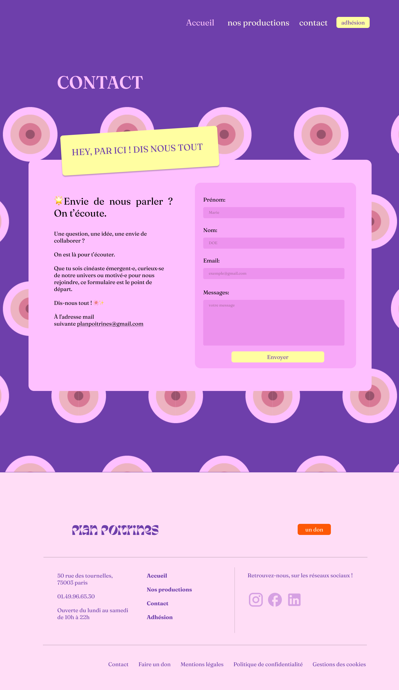
Agrandir la vidéo
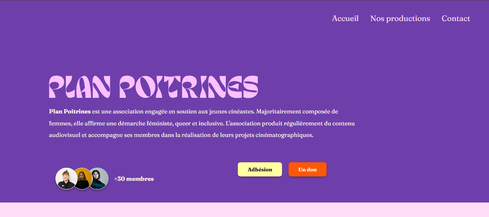
03
Étapes du processus de création
1. Recueil des besoins et définition de l'organisation du site
J'ai commencé par échanger avec les deux co-présidentes pour identifier les contenus prioritaires et comprendre les attentes de l'association. À partir de ces échanges, j'ai proposé une organisation en quatre pages : une page d'accueil présentant l'association et ses valeurs, une page de productions mettant en avant les projets audiovisuels, une page contact avec formulaire et liens vers les réseaux sociaux, et une page adhésion pour faciliter l'inscription de nouveaux membres. Cette structure a été validée rapidement, ce qui m'a permis de démarrer le développement sans attendre.
2. Développement du site, identité & hébergement
J'ai fait le choix de travailler avec les langages de base du web — HTML pour la structure des pages et CSS pour leur mise en forme visuelle — sans recourir à un outil de gestion de contenu comme WordPress. Ce choix répondait à deux contraintes : d'abord, l'équipe n'avait pas de profil technique pour maintenir un outil complexe ; ensuite, cela me permettait de produire un code clair, structuré et documenté, directement réutilisable par quelqu'un d'autre. J'ai également veillé à ce que le site s'adapte automatiquement à la taille de l'écran de l'utilisateur (responsive design). Pour les tests réels, j'ai déployé le site sur un serveur web personnel que je loue en ligne.
04 — Difficultés rencontrées
La principale difficulté a été le manque de retours réguliers de l'équipe. Travaillant à distance, il m'était difficile d'obtenir des validations rapides, ce qui a ralenti certaines étapes, notamment la page d'adhésion interactive, restée en cours de finalisation à la fin du stage. Cette page nécessitait des décisions de l'association sur le processus d'inscription, des décisions qui tardaient à être prises collectivement. Par ailleurs, l'identité graphique étant encore en évolution pendant mon stage, j'ai dû composer avec des éléments provisoires et anticiper des ajustements futurs, ce qui a complexifié les choix de design.
05 — Synthèse et réflexion
Cette mission m'a appris que le développement d'un outil numérique dans un environnement associatif ne se limite pas aux compétences techniques. J'ai compris concrètement l'importance d'un cadrage initial solide : définir dès le départ les délais de validation, les interlocuteurs décisionnaires et les livrables attendus aurait évité une partie des blocages. J'ai également pris conscience que l'autonomie en télétravail demande une communication proactive — il ne suffit pas d'attendre des retours, il faut les solliciter activement avec des points réguliers. Techniquement, j'ai consolidé mes compétences en intégration web et en réflexion sur l'organisation et le parcours utilisateur au sein du site. Si je devais recommencer, j'établirais dès le début un planning partagé avec des étapes clés clairement définies, et je prévoirais des réunions synchrones plus fréquentes avec les co-présidentes pour avancer plus efficacement malgré la distance.
Projet Pro · Solidarité
Association ACM (Ike Oluwa)
Refonte globale de la plateforme d'action sociale interculturelle de l'association ACM (Ike Oluwa).
DévelopperConcevoirEntreprendreComprendreExprimer
01
Introduction et contexte
Dans le cadre de mon parcours de BUT MMI, j'ai collaboré avec l'association ACM (Ike Oluwa), qui œuvre pour la solidarité interculturelle et l'accompagnement social au niveau local. L'association avait besoin d'un outil moderne pour structurer ses activités de présentation, récolter des dons de manière sécurisée et centraliser les demandes d'adhésion.
02
La mission
La mission consistait à concevoir et développer une plateforme d'action solidaire complète : présentation dynamique des pôles d'activités, module de dons sécurisé, et espace d'administration épuré pour les bénévoles.
Traces du projet ACM (Cliquer pour zoomer)
Agrandir

Agrandir
Agrandir
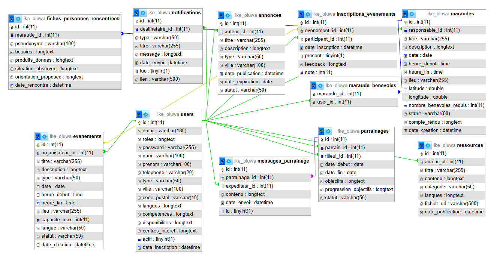
Agrandir
03
Processus de création
Conception Centrée Utilisateur
Analyse du parcours des bénévoles et donateurs, prototypage basse-fidélité pour valider les interactions avant d'entamer l'intégration.
Développement & Sécurité
Développement de l'interface en responsive design, mise en place d'un modèle de base de données relationnelle SQL robuste, et liaison avec un système de dons sécurisé.
04
Difficultés
La complexité résidait dans l'accessibilité de l'interface pour un public de bénévoles d'horizons variés, résolue en simplifiant le parcours utilisateur et en menant des tests de lisibilité poussés.
05
Bilan personnel
Un projet solidaire porteur de sens qui m'a sensibilisée aux besoins spécifiques du secteur tiers et a consolidé ma polyvalence en ingénierie et intégration UX/UI.
Projet Universitaire · S5
WR506D — API REST & GraphQL — Gestion de films
Architecture back-end complète et interface de recherche développées en totale autonomie dans le cadre du semestre 5 du BUT MMI.
DévelopperConcevoirComprendreExprimer
01
Introduction et contexte
Dans le cadre de ma troisième année de BUT Métiers du Multimédia et de l'Internet à l'IUT de Troyes, j'ai réalisé en totale autonomie un projet back-end avancé portant sur la gestion d'un catalogue de films. L'objectif académique était de concevoir et développer une API professionnelle complète, sécurisée et documentée, puis de la connecter à une interface front-end développée dans un dépôt séparé. Ce projet couvre l'ensemble du cycle de développement d'une application web : de la modélisation des données jusqu'à la mise en place d'une chaîne d'intégration continue.
02
La mission
L'exercice consistait à construire une API robuste — c'est-à-dire un service qui stocke, organise et expose des données structurées — permettant de gérer un catalogue de films, d'acteurs, de réalisateurs et de catégories. Cette API devait ensuite être consommée par une interface front-end développée en parallèle dans un dépôt distinct, les deux projets communiquant entre eux. L'enjeu principal était de produire un code de qualité professionnelle : sécurisé, bien organisé, testé et conforme aux standards du secteur.
Traces du projet WR506D (Cliquer pour zoomer)
Agrandir
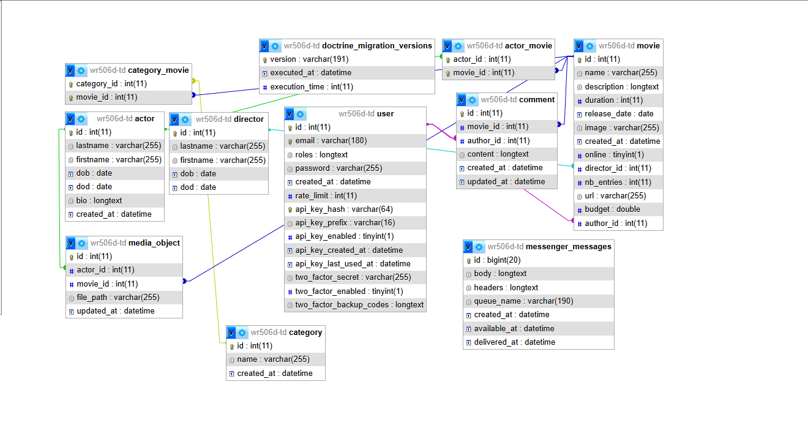
Agrandir
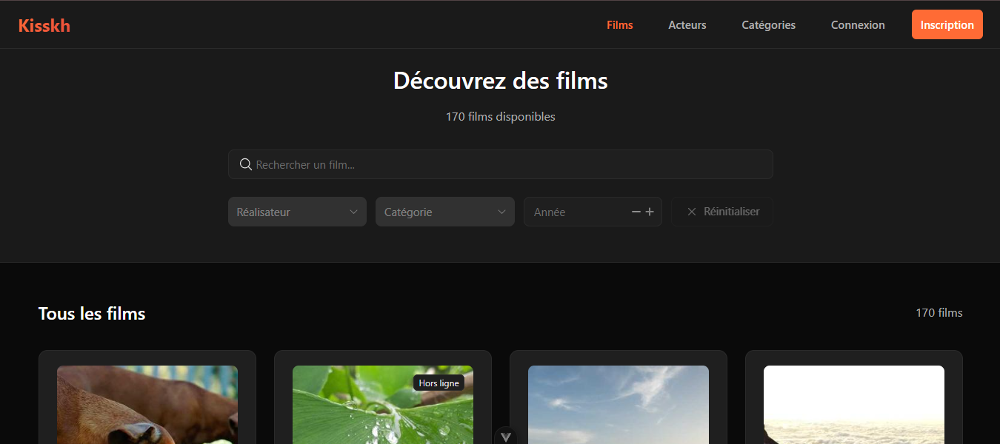
Agrandir
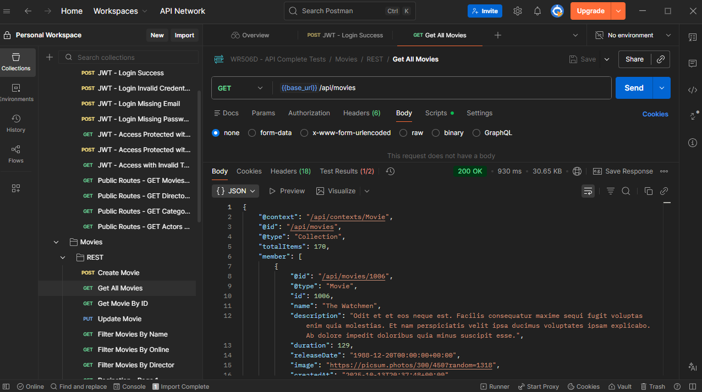
03
Étapes du processus de création
1. Conception de la base de données
Avant d'écrire la moindre ligne de code, j'ai modélisé l'ensemble des données à gérer : films, acteurs, réalisateurs, catégories, utilisateurs, et les relations entre eux. Par exemple, un film peut avoir plusieurs acteurs, et un actor peut avoir joué dans plusieurs films. Bien définir ces liens en amont était indispensable pour que l'application reste cohérente et évolutive.
2. Construction de l'API
J'ai développé l'API avec Symfony 7 et API Platform, deux outils professionnels largement utilisés en entreprise. J'ai mis en place deux façons d'interroger les données : une architecture REST classique, et GraphQL, une approche plus flexible qui permet à l'interface de demander exactement les informations dont elle a besoin, sans surplus. J'ai également intégré un système de pagination, des filtres de recherche par nom, date ou disponibilité en ligne, et des règles de validation pour garantir la cohérence des données saisies.
3. Sécurisation des accès
L'API est sécurisée par authentification JWT — un système de jetons numériques qui vérifie l'identité de l'utilisateur à chaque requête. J'ai mis en place deux niveaux d'accès distincts : un rôle utilisateur standard et un rôle administrateur avec des droits étendus. J'ai également implémenté une double authentification (2FA) via Google Authenticator : après la connexion classique, l'utilisateur doit saisir un code temporaire généré par son téléphone. C'était ma première implémentation de ce mécanisme, et cela m'a permis de comprendre concrètement comment fonctionne la sécurité à deux facteurs dans une application web professionnelle. J'ai par ailleurs intégré la gestion des photos de films et d'acteurs via upload de fichiers.
4. Alimentation et test de l'API & 5. Connexion front-end
Pour disposer d'un volume de données réaliste dès le départ, j'ai généré automatiquement 150 films et 190 acteurs via un système de fixtures. J'ai ensuite documenté et testé l'ensemble des routes avec Postman, en utilisant des variables d'environnement pour rendre la collection réutilisable facilement. L'interface utilisateur a été développée dans un dépôt séparé, puis connectée à l'API. Gérer la communication entre deux dépôts distincts m'a appris à penser l'architecture en termes de contrat d'interface : l'API expose des données dans un format défini, le front les consomme, et les deux projets doivent s'accorder sur ce format pour fonctionner ensemble.
6. Qualité du code et automatisation
Les commits Git suivent la convention Conventional Commits — une règle de nommage standardisée qui rend l'historique du projet lisible par n'importe quel développeur. J'ai également intégré des outils d'analyse automatique : PHPStan pour détecter les erreurs de logique, PHP_CodeSniffer pour vérifier la conformité au standard PSR-2, et PHPMD pour identifier les parties de code trop complexes. L'ensemble est automatisé via GitHub Actions : à chaque modification du code, ces vérifications se déclenchent automatiquement.
04
Difficultés rencontrées
La principale difficulté a été de faire coexister REST et GraphQL sur la même base de code sans créer de conflits de configuration. L'implémentation de la 2FA a également représenté un vrai défi technique : comprendre le fonctionnement des codes TOTP, les intégrer dans le flux d'authentification existant et gérer les cas particuliers demandait une compréhension fine du mécanisme. Enfin, connecter deux dépôts indépendants m'a obligée à définir clairement le format des données échangées entre le back-end et le front-end, ce qui m'a sensibilisée aux enjeux de conception d'une API réellement consommable.
05
Bilan personnel
Ce que ce projet m'a apporté
Ce projet m'a donné une vision claire de ce que signifie construire une API de niveau professionnel. Au-delà des fonctionnalités, j'ai compris que la qualité du code — lisible, versionné proprement, testé et documenté — est aussi importante que le fait qu'il fonctionne. C'est cette rigueur que je retiens avant tout.
Les compétences développées
J'ai consolidé ma maîtrise de Symfony et découvert API Platform dans toute sa richesse. J'ai pris en main des outils directement issus du monde professionnel : JWT et 2FA pour la sécurité, GitHub Actions pour l'automatisation, Postman pour la documentation et les tests, et les conventions Git pour un historique propre et exploitable.
Ce que je ferais différemment
Si je devais recommencer, j'écrirais les tests unitaires en parallèle du développement plutôt qu'en fin de projet. Développer et tester simultanément aurait rendu chaque étape plus solide et m'aurait évité de revenir en arrière pour corriger des erreurs détectées tardivement.
Projet Universitaire · S6
WR602D — Micro-service de génération de PDF & abonnements
Développement et déploiement d'un micro-service PDF Gotenberg intégré à une application de gestion d'abonnements Stripe.
DévelopperEntreprendre
01
Introduction et contexte
Dans le cadre de ma troisième année de BUT Métiers du Multimédia et de l'Internet à l'IUT de Troyes, j'ai réalisé en totale autonomie un projet de semestre 6 portant sur l'architecture en micro-services. L'objectif était de comprendre et d'appliquer un concept clé du développement professionnel moderne : découper une application en services indépendants qui communiquent entre eux, plutôt que de tout regrouper dans un seul et même projet.
02
La mission
Le projet se décomposait en deux parties distinctes. D'un côté, un micro-service dédié uniquement à la génération de fichiers PDF, appelable depuis n'importe quelle application. De l'autre, une application Symfony principale dotée d'une interface utilisateur en Twig, qui consomme ce micro-service et propose un système de comptes avec différents niveaux d'abonnement. Selon son abonnement, l'utilisateur a accès à plus ou moins de fonctionnalités — par exemple, un quota limité de PDFs par jour pour un abonnement de base, ou un accès illimité pour un abonnement supérieur.
Traces du projet WR602D (Cliquer pour zoomer)
Agrandir
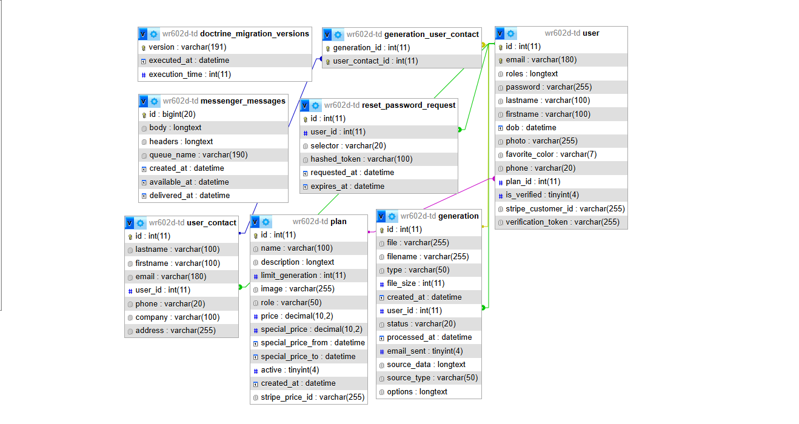
Agrandir
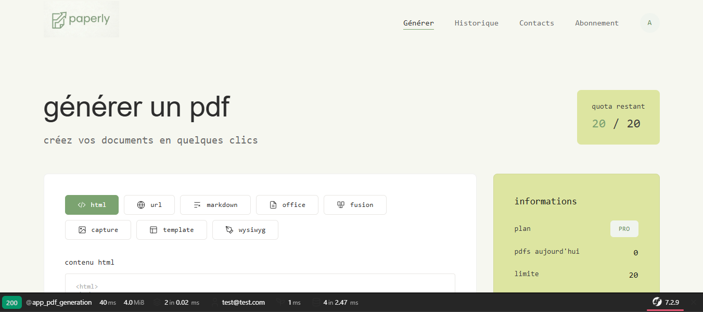
Agrandir
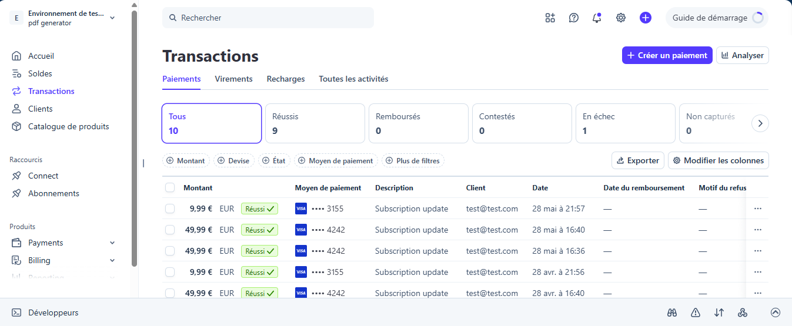
03
Étapes du processus de création
1. Compréhension de l'architecture micro-services
Avant de développer quoi que ce soit, j'ai pris le temps de comprendre ce que signifie concevoir en micro-services : chaque service a une responsabilité unique, fonctionne de façon autonome, et communique avec les autres via des requêtes HTTP. Cette logique est très différente d'une application classique où tout est centralisé, et elle m'a demandé de repenser ma façon d'organiser un projet.
2. Développement du micro-service PDF
J'ai développé le micro-service de génération de PDF en m'appuyant sur Gotenberg, un outil open source qui convertit des contenus web en fichiers PDF. Le micro-service reçoit une requête, génère le PDF correspondant et le retourne. Il est entièrement indépendant de l'application principale et peut être appelé via Symfony HttpClient.
3. Développement de l'application principale
J'ai ensuite développé l'application Symfony qui consomme ce micro-service. L'interface utilisateur est codée en Twig, le moteur de templates natif de Symfony. Elle permet la création de compte, la connexion sécurisée, et la gestion du profil utilisateur.
4. Système d'abonnements avec Stripe & 5. Déploiement
J'ai intégré Stripe — la référence du paiement en ligne — pour gérer les niveaux d'abonnement. Les paiements sont simulés en environnement de test, sans argent réel. Selon l'abonnement souscrit, l'application adapte automatiquement les fonctionnalités accessibles à l'utilisateur : quota de PDFs journalier pour le niveau de base, accès illimité pour les niveaux supérieurs. J'ai aussi mis en place un déploiement automatique via GitHub Actions, couvrant à la fois Gotenberg et l'application Symfony.
04
Difficultés rencontrées
La principale difficulté a été de faire communiquer deux projets distincts de façon fiable. Configurer Symfony HttpClient pour qu'il appelle correctement le micro-service, gérer les erreurs de communication entre les deux, et s'assurer que tout fonctionne aussi bien en local qu'en déploiement a demandé beaucoup de rigueur. L'intégration de Stripe a également représenté un apprentissage important : comprendre le fonctionnement des webhooks, des événements de paiement et de la gestion des états d'abonnement côté serveur était une première pour moi.
05
Bilan personnel
Ce que ce projet m'a apporté
Ce projet m'a ouvert à une façon de penser l'architecture logicielle que je n'avais pas encore expérimentée. Découper une application en services indépendants, c'est accepter une complexité de coordination en échange d'une meilleure maintenabilité et évolutivité. C'est une logique que je retrouve directement dans les projets professionnels et qui donne du sens à beaucoup de choix techniques que je rencontre en entreprise.
Les compétences développées
J'ai découvert Gotenberg, approfondi mon usage de Symfony HttpClient, et pris en main Stripe pour la première fois. J'ai également consolidé ma compréhension du déploiement automatisé avec GitHub Actions dans un contexte multi-services, ce qui est plus complexe que sur un projet monolithique.
Ce que je ferais différemment
Si je devais recommencer, je définirais plus tôt le contrat d'interface entre le micro-service et l'application principale — c'est-à-dire le format exact des requêtes et des réponses échangées. Clarifier ce point dès le départ aurait évité plusieurs ajustements en cours de route.